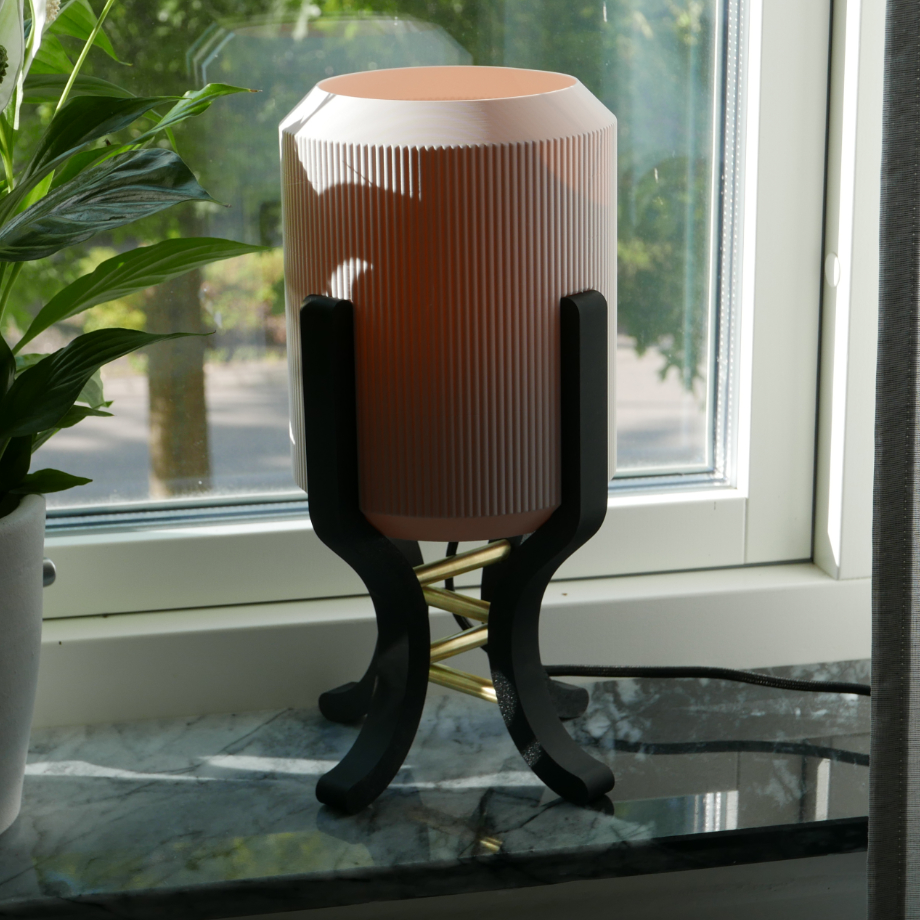
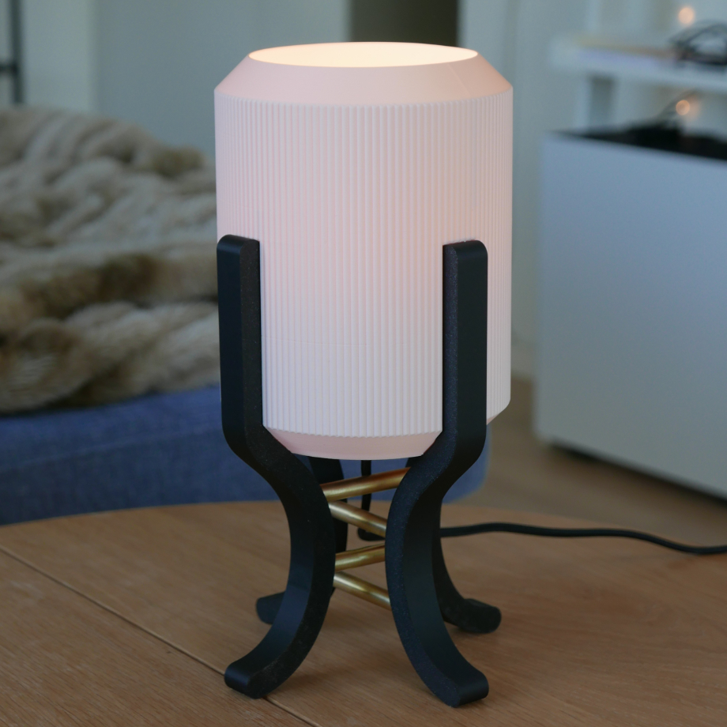
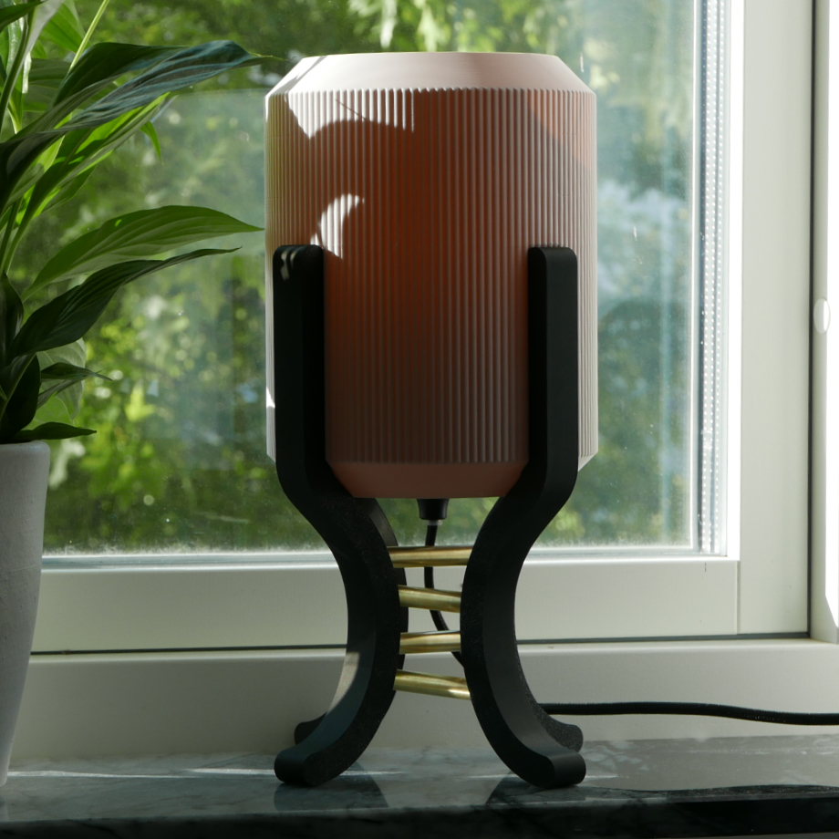
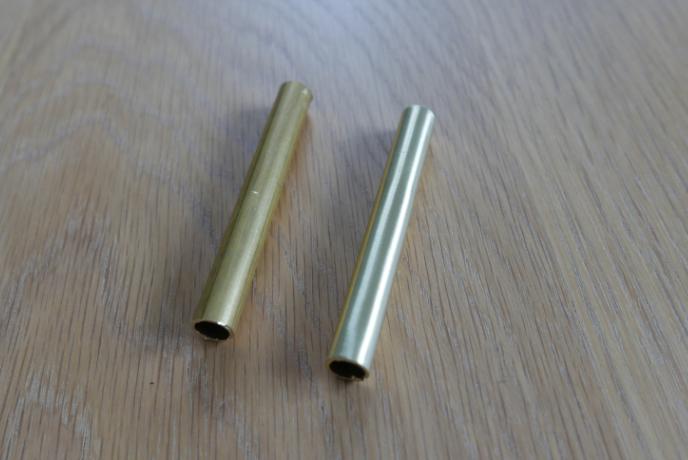
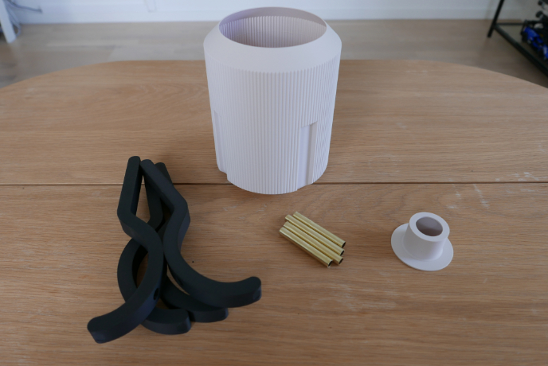
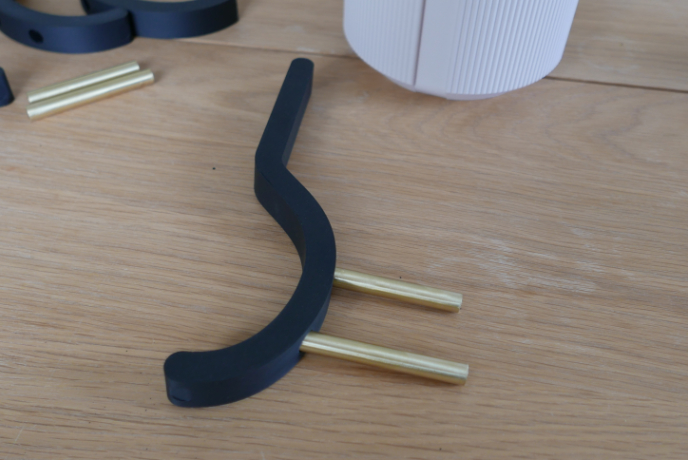
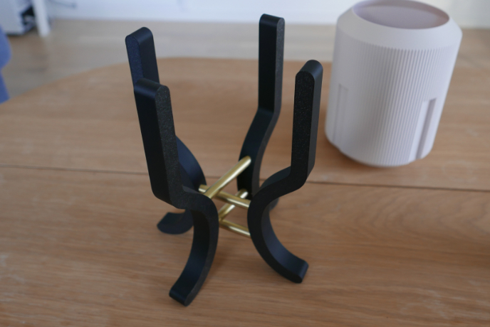

Ville göra något med mässing som jag hade hemma
Mot alla odds blev de en lampa
Ser lite ut som en skärm som hålls upp av styltor




Började med att se om jag kunde få den finishen jag ville på mässingrören jag hade hemma
Sågade till de i rätt längder och sen fäste de i skruvdragaren och våtsandade upp till 1200 grit
Blev nästan exakt så som jag ville så kan hända att det blir mer mässing i projekten framöver

Alla andra delar är bara 3D printade så inte så mycket spännande där
Skärmen blev inte lika fin som jag hade velat men det går alltid att skriva ut igen om jag stör mig för mycket på de
Tanken va att benen skulle vara i trä men visste inte om det va värt besväret för tänkte att lampan inte va så fin så började med att bara skriva ut de med
Är väl inte helt såld på designen så lär nog inte bli en träversion

Monteringen va ganska simpel, bara att limma ihop delarna mer eller mindre
Limmade fast mässingrören i benen och använde de matchande benet för att se till att det blev rakt

Tänkte först att limma fast skärmen med men i och med att jag inte helt gillade hur utskriften blev så undvek jag de
Så som den är nu är de bara att lyfta av skärmen om jag skulle vilja byta ut den
Glömde ta bild på de men de sitter en vanlig E14 lampa i mitten monterad på samma sätt som typ alla andra mina lampor